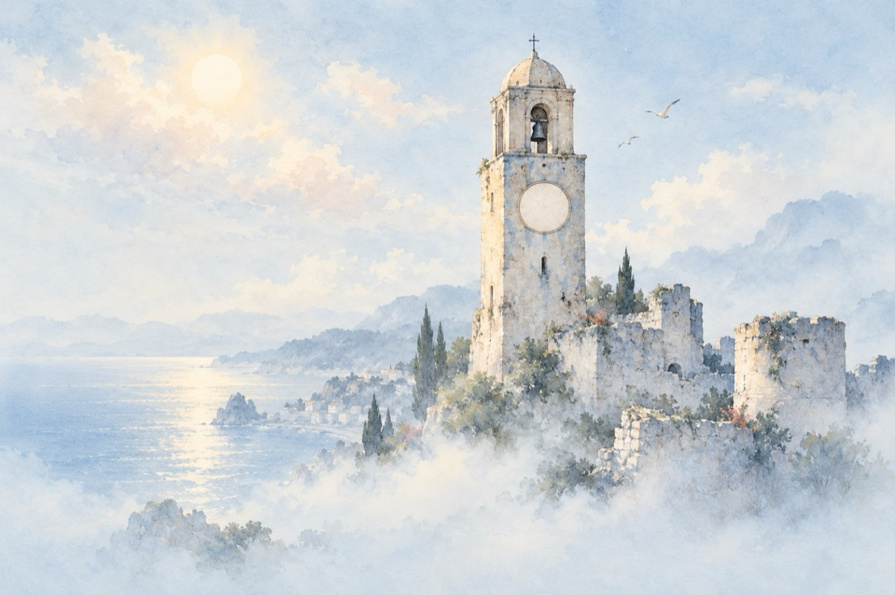

Sperlongo
Italia.
Italia
A fost așa cum am sperat
Și am sperat atât de mult
Să fie precum s-a-ntâmplat
O evadare – un vis plăcut.
N-au ochii de astăzi cum să creadă
Minuni, istorii, mărturii
Atât cât le-a fost dat să vadă
Ce-a fost pe-aici de-a lungul vremii!
O lume veche ce-a trăit
Mărșăluind voit sau nu pe drumuri
Cetăți, imperii au construit
Crezându-se stăpânii lumii
V-am spune ce-i de azi privind!
Dar toate vin și toate trec
Atunci, acum, sau poate-n viitor
Cum soarele cu norii se petrec
Așa și omul prin istorii e trecător?
De-i important sau nu tot ceea ce rămâne
La timpul lor, astâmpărând nevoi, orgolii,
De toate-au fost cu gânduri bune sau nebune,
Cu toții le vedem, până și orbii!
Să fie-adevărat tot ceea ce azi mă-nconjoară?
Ruine, bastioane, cetăți, de negură cuprinse
Bătaia ceasului din turn răsună-a câta oară?
Trezindu-mă din frământări, trezindu-mă din vise!
Vasile Groza